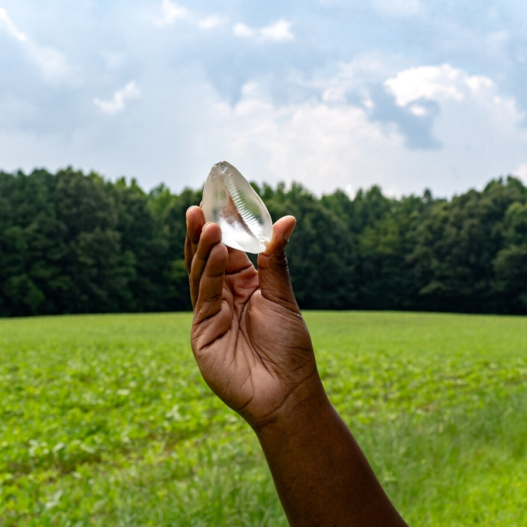

tether me to the ground or let me float: Closing
Attend the closing reception for tether me to the ground or let me float on Sunday, April 12th, from 2:00-6:00pm.
Through the investigation of personal histories, familial ancestry, and the weight of place, the six ACRE alumni artists in tether me to the ground or let me float consider how we gather fragmented ideas of place and identity to piece together notions of belonging and grounding.
Grounding becomes a means of navigating obscured histories and solidifying ourselves, our ancestors, and our communities to a place. tether me to the ground or let me float examines how we ground ourselves within our own histories and how we become informed and infused by the places we occupy.
The exhibition questions the complexity of home, the relationship between the environment and the body, and the fragility of temporalities. Molded and shaped by the landscapes that surround them, the artists in the exhibition explore the multifaceted, imperfect, and often difficult undertaking of building an ecology of belonging that radically imagines our relationships to the ongoing history of a place.
Unearthing and breaking down these relationships, the artists reflect on space in relation to memory, migration, community, and spirituality. They consider the tangible traces of our presence and the ephemeral quality of the personal and ancestral histories that both tether and release us from the places we pass through and remain in. Place and home become at once stark and ephemeral in these narratives, inviting the viewer to imagine how we locate and ground ourselves within these complexities.